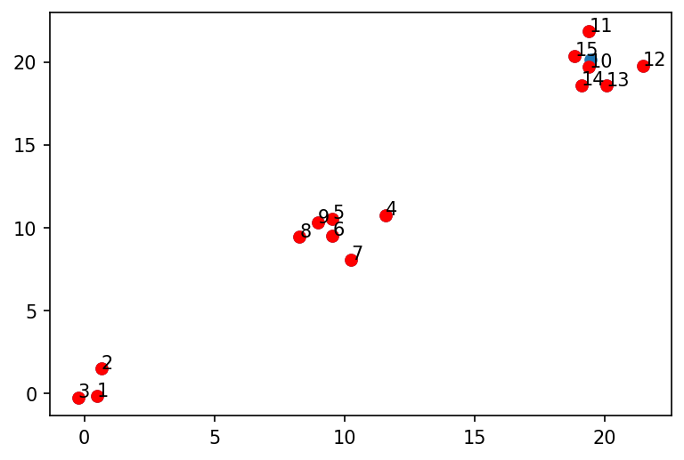

Getting started¶
Demo - Dissimilarity Based Selection Synthetic Data¶
In this tutorial, we are going to show how the QC-Selector work with 2D synthstic data. Each axis represents one feature. For each example, we will have two different synthstic datasets where the first one can be seen as randomly generated data points and the latter generates data points beloing to different clusters. By using 2D feature data points, it makes visualization easy.
Generating Synthetic Data¶
# install the DiverseSelector module
!pip install git+https://github.com/theochem/DiverseSelector
!pip install rdkit
import DiverseSelector
import matplotlib.pyplot as plt
import numpy as np
from typing import Any, Tuple, Union
from sklearn.datasets import make_blobs
from sklearn.metrics import pairwise_distances
def generate_synthetic_data(n_samples: int = 100,
n_features: int = 2,
n_clusters: int = 2,
cluster_std: float = 1.0,
center_box: Tuple[float, float] = (-10.0, 10.0),
metric: str = "euclidean",
shuffle: bool = True,
random_state: int = 42,
pairwise_dist: bool = False,
**kwargs: Any,
) -> Union[Tuple[np.ndarray, np.ndarray],
Tuple[np.ndarray, np.ndarray, np.ndarray]]:
"""Generate synthetic data.
Parameters
----------
n_samples : int, optional
The number of samples. Default=100.
n_features : int, optional
The number of features. Default=2.
n_clusters : int, optional
The number of clusters. Default=2.
cluster_std : float, optional
The standard deviation of the clusters. Default=1.0.
center_box : tuple[float, float], optional
The bounding box for each cluster center when centers are generated at random.
Default=(-10.0, 10.0).
metric : str, optional
The metric used for computing pairwise distances. For the supported
distance matrix, please refer to
https://scikit-learn.org/stable/modules/generated/sklearn.metrics.pairwise_distances.html.
Default="euclidean".
shuffle : bool, optional
Whether to shuffle the samples. Default=True.
random_state : int, optional
The random state used for generating synthetic data. Default=42.
pairwise_dist : bool, optional
If True, then compute and return the pairwise distances between samples. Default=False.
**kwargs : Any, optional
Additional keyword arguments for the scikit-learn `pairwise_distances` function.
Returns
-------
syn_data : np.ndarray
The synthetic data.
class_labels : np.ndarray
The integer labels for cluster membership of each sample.
dist: np.ndarray
The symmetric pairwise distances between samples.
"""
# pylint: disable=W0632
syn_data, class_labels = make_blobs(n_samples=n_samples,
n_features=n_features,
centers=n_clusters,
cluster_std=cluster_std,
center_box=center_box,
shuffle=shuffle,
random_state=random_state,
return_centers=False,
)
if pairwise_dist:
dist = pairwise_distances(X=syn_data,
Y=None,
metric=metric,
**kwargs,
)
return syn_data, class_labels, dist
else:
return syn_data, class_labels
coords, class_labels, arr_dist = generate_synthetic_data(n_samples=100,
n_features=2,
n_clusters=1,
pairwise_dist=True,
metric="euclidean",
random_state=42)
coords_cluster, class_labels_cluster, arr_dist_cluster = generate_synthetic_data(n_samples=100,
n_features=2,
n_clusters=3,
pairwise_dist=True,
metric="euclidean",
random_state=42)
def graph_data(coords, selected=None, reference=False):
plt.figure(dpi=150)
plt.scatter(coords[:, 0], coords[:, 1])
if selected:
for i, mol_id in enumerate(selected):
plt.scatter(coords[mol_id, 0], coords[mol_id, 1], c='r')
plt.text(coords[mol_id,0], coords[mol_id,1], str(i+1))
if reference:
plt.scatter(coords[0, 0], coords[0, 1], c='black')
plt.show()
graph_data(coords)
graph_data(coords_cluster)
Running Dissimilarity Algorithms¶
Brute Strength - MaxMin¶
# MaxMin method
from DiverseSelector.methods.partition import *
from DiverseSelector.methods.dissimilarity import *
# diverse subset selection from randomly generated data points
selector = MaxMin()
selected_ids1 = selector.select(arr=arr_dist, size=12)
# diverse subset selection from data points with obvious patterns (different clusters)
selector = MaxMin()
selected_ids2 = selector.select(arr=arr_dist_cluster, labels=class_labels_cluster, size=12)
graph_data(coords,selected_ids1)
graph_data(coords_cluster,selected_ids2)
Adapted Optimizable K-Dissimilarity Selection (OptiSim)¶
# diverse subset selection from randomly generated data points
selected_id3 = OptiSim().select(coords, 12)
# diverse subset selection from data points with obvious patterns (different clusters)
selected_id4 = OptiSim().select(coords_cluster, size=12, labels=class_labels_cluster)
graph_data(coords,selected_id3)
graph_data(coords_cluster,selected_id4)
Directed Sphere Exclusion¶
# diverse subset selection from randomly generated data points
selected_id5 = DirectedSphereExclusion().select(coords, 12)
# diverse subset selection from data points with obvious patterns (different clusters)
selected_id6 = DirectedSphereExclusion().select(coords_cluster, size=12, labels=class_labels_cluster)
graph_data(coords,selected_id5)
graph_data(coords_cluster,selected_id6)
Grid Partitioning Method¶
# diverse subset selection from randomly generated data points
selected_id7 = GridPartitioning(2, "equisized_independent").select(coords, 12)
# diverse subset selection from data points with obvious patterns (different clusters)
selected_id8 = GridPartitioning(2, "equisized_independent").select(coords_cluster,
size=12,
labels=class_labels_cluster)
graph_data(coords,selected_id7)
graph_data(coords_cluster,selected_id8)
# 20, 5, 3, "equisized_independent"
MinMax selection with clusters, but without assuming there are clusters¶
selector = MaxMin()
selected_ids = selector.select(arr=arr_dist_cluster, size=15)
graph_data(coords_cluster, selected_ids)
import numpy as np
from sklearn.metrics import pairwise_distances
np.random.seed(42)
cluster_one = np.random.normal(0, 1, (3,2))
cluster_two = np.random.normal(10, 1, (6,2))
cluster_three = np.random.normal(20, 1, (7,2))
labels_mocked = np.hstack([[0 for i in range(3)],
[1 for i in range(6)],
[2 for i in range(7)]])
mocked_cluster_coords = np.vstack([cluster_one, cluster_two, cluster_three])
selector = MaxMin(lambda x: pairwise_distances(x, metric='euclidean'))
selected_mocked = selector.select(mocked_cluster_coords, size=15, labels=labels_mocked)
graph_data(mocked_cluster_coords, selected_mocked)
selected_mocked

[0, 1, 2, 3, 4, 5, 6, 7, 8, 14, 15, 10, 11, 9, 13]
Brute Strength - maxsum¶
selector = DissimilaritySelection(num_selected=12,
arr_dist=arr_dist,
random_seed=42,
method="maxsum")
selector.starting_idx = 0
selected_ids2 = selector.select()
graph_data(selected_ids2)

Grid Partitioning - Equisized Independent¶
selector = DissimilaritySelection(features=coords,
num_selected=12,
arr_dist=arr_dist,
grid_method="grid_partioning",
random_seed=42)
selector.starting_idx = 0
selected_ids3 = selector.select()
graph_data(selected_ids3)
Grid Partitioning - Equisized Dependent¶
selector = DissimilaritySelection(num_selected=12,
features = coords,
random_seed=42,
dissim_func="grid_partitioning",
grid_method="equisized_dependent")
selector.starting_idx = 0
selected_ids4 = selector.select()
graph_data(selected_ids4)
Directed Sphere Exclusion¶
selector = DissimilaritySelection(num_selected=12,
features=coords,
dissim_func="sphere_exclusion",
random_seed=42)
selector.starting_idx = 0
selected_ids5 = selector.select()
graph_data(selected_ids5, True)
Optisim¶
selector = DissimilaritySelection(num_selected=12,
features=coords,
dissim_func="optisim",
random_seed=42)
selector.starting_idx = 0
selected_ids6 = selector.select()
graph_data(selected_ids6)